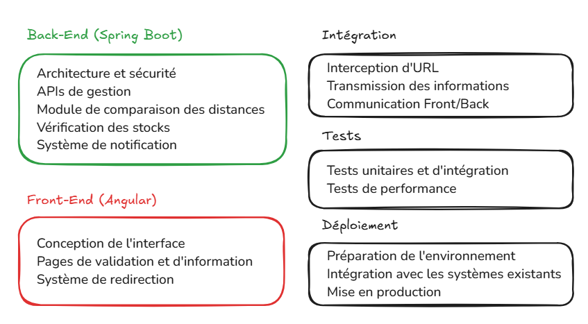

Présentée par Xinhe YU
le 21 mars 2025

| Tâche technique | Complexité | Estimation temps | Marge |
|---|---|---|---|
| A1-2. Mise en place de l'architecture de l'application Spring Boot et de la sécurité des données | 5 | 1 | 0,5 |
| A3-4. Création des API pour la gestion des commandes | 2 | 0,5 | 0,125 |
| A5-6. Développement du module et l'algorithme de comparaison des distances | 5 | 1 | 0,375 |
| A7. Développement des fonctionnalités de vérification des stocks | 2 | 0,50 | 0,125 |
| A8. Implémentation du mécanisme de notification pour le magasin expéditeur | 1 | 0,25 | 0,125 |
| B1. Conception de l'interface utilisateur | 2 | 0,50 | 0,25 |
| B2-3. Création de la page de validation du panier et la page des informations d'expédition | 2 | 0,50 | 0,25 |
| B4. Développement du système de redirection vers le site de vente en ligne | 2 | 0,50 | 0,25 |
| C1. Mise en place de l'interception de l'URL du site de vente en ligne | 2 | 0,50 | 0,25 |
| C2. Développement du système de transmission des informations de livraison | 3 | 0,75 | 0,25 |
| C3. Implémentation de la communication entre le Front-End et le Back-End | 2 | 0,50 | 0,25 |
| D. Mise en place de tests unitaires, d'intégration et de performance | 3 | 0,75 | 0,25 |
| E. Préparation de l'environnement de production, Intégration avec les systèmes existants d'Alisa's Closet et Déploiement de l'application | 5 | 1 | 0,75 |
| Membre de l'équipe | Jours de travail | Coût (€) |
|---|---|---|
| A – Architecte logiciel | 5 | 4000 |
| B – Développeur Back-end | 4 | 2800 |
| F – Développeur Front-end | 3 | 2100 |
| Total | 12 | 8900 |
| 1 Négligeable |
2 Mineure |
3 Modéré |
4 Majeure |
5 Catastrophique |
|
|---|---|---|---|---|---|
| 5 Très probable |
5 | 10 | 15 💻Dépendance à des services tiers ou API externes |
20 | 25 |
| 4 Probable |
4 | 8 💻Problèmes d'intégration avec le système |
12 | 16 💻Performances insuffisantes lors de nombreuses requêtes simultanées |
20 |
| 3 Possible |
3 | 6 | 9 🧍♀️Non-disponibilité d'un membre de l'équipe |
12 💻Vulnérabilités de sécurité dans la protection des données clients |
15 |
| 2 Peu probable |
2 | 4 | 6 | 8 🧍♀️Élargissement du périmètre du projet |
10 🧍♀️Dépassement du budget alloué |
| 1 Très peu probable |
1 | 2 | 3 | 4 🧍♀️Départ d'un membre clé de l'équipe pendant le projet |
5 🧍♀️Dépassement du temps alloué |
| Score | Risque | Mesure de prévoyance |
|---|---|---|
| 16 | Performances insuffisantes sous charge | Architecture scalable et optimisation des requêtes avec mécanismes de cache |
| 15 | Dépendance aux services externes | Évaluation des fournisseurs et mise en place de mécanismes de fallback |
| 12 | Vulnérabilités de sécurité | Audits réguliers, tests de pénétration et formation aux bonnes pratiques |
| 10 | Dépassement du budget | Suivi budgétaire précis avec points de contrôle et marge de sécurité |
| 9 | Non-disponibilité d'un membre de l'équipe | Plan de remplacement préétabli et répartition des connaissances critiques |
| 8 | Problèmes d'intégration avec le système existant | Analyse approfondie des systèmes en amont et tests d'intégration réguliers |
| 8 | Élargissement du périmètre | Document de référence validé et processus formel de gestion des changements |
| 5 | Dépassement du temps alloué | Planification détaillée avec jalons intermédiaires et suivi hebdomadaire de l'avancement |
| 4 | Départ d'un membre clé | Documentation continue et pratiques de partage de connaissances |